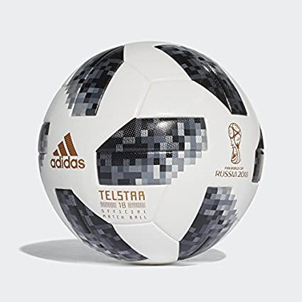
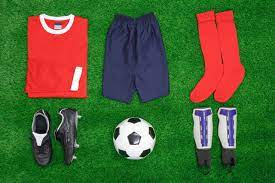
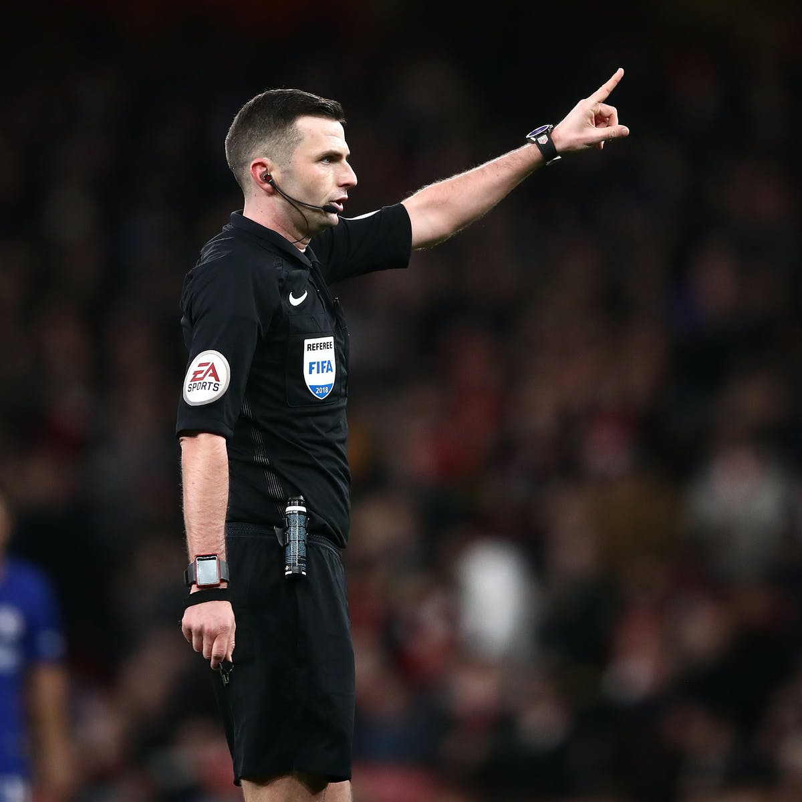
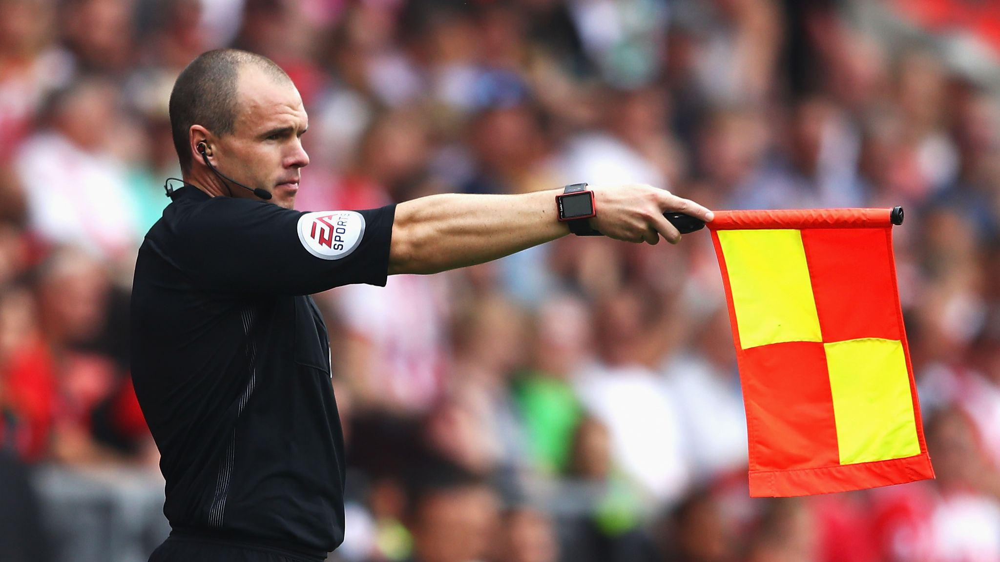
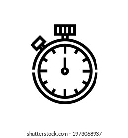
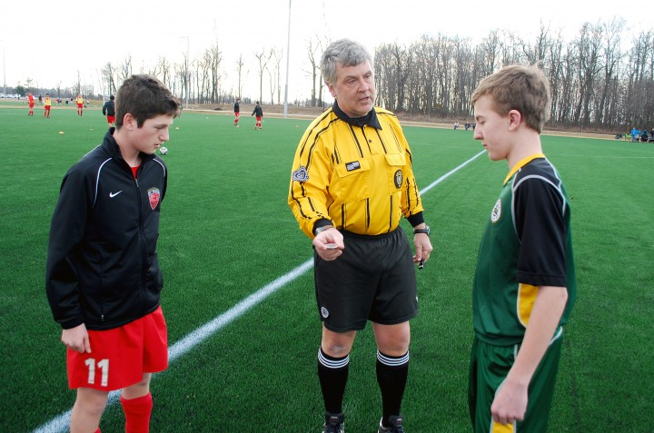
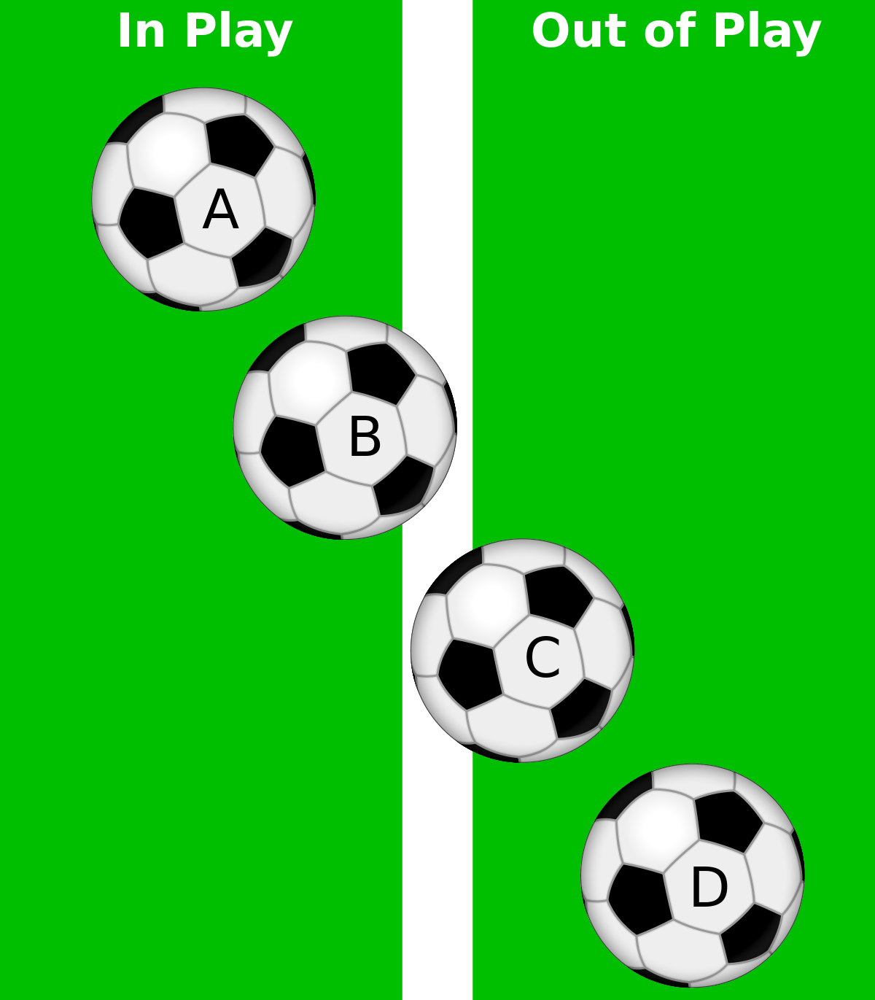
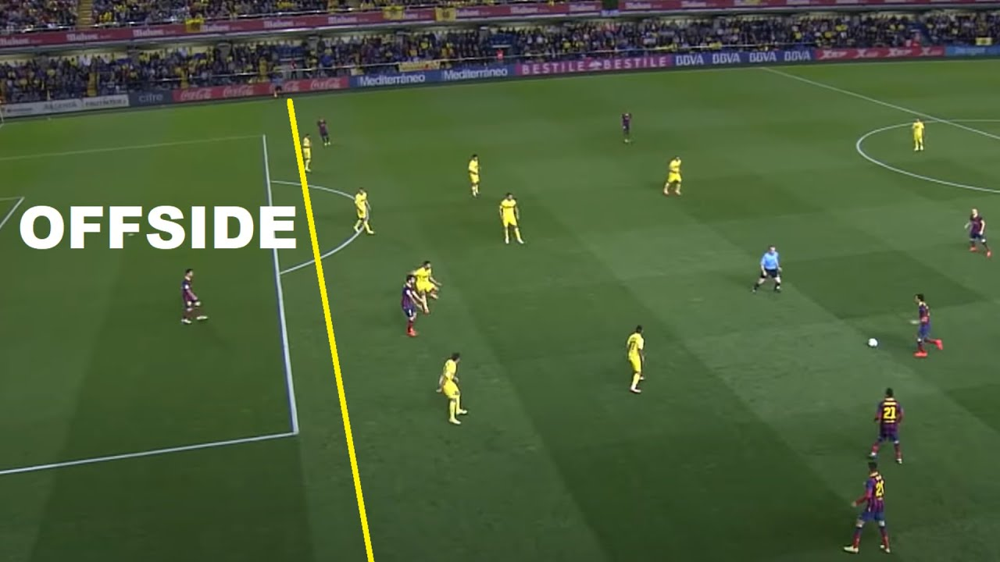

Laws of football
1.Field of play

The field of play is the surface where the game is going to be played. In a standard 11-a-side match, the football pitch must be 90–120 meters in length (touchline) and 45–90 meters in breadth (goal line).
2.Soccer ball

A standard soccer ball should be spherical with a circumference in range of 68–70 cm and weigh in between 410g and 450g. The ball should be inflated to a pressure range of 0.6–1.1 atmosphere.
3.Number of players
According to the official rules, a football match is played between two teams each consisting of a maximum of 11 players, out of which 10 are outfield players and 1 is a goalkeeper.
4.Equipment

The rules state that the player’s equipment should contain a jersey or shirt with sleeves, shorts, footwear, shin guard, and stocks. The socks must be long enough to cover the entire shin guard.
5 Referee

Every football match has officials who regulate the match and enforce the Laws of the Game.They are responsible to maintain the decorum of the game and penalize a player for breaking the rules. The referee has the power to stop the game at any point when he believes a foul has been committed or the ball has gone out of play.
6 Assistent referee

In association football, an assistant referee (also known as a linesman or lineswoman) is an official empowered with assisting the referee in enforcing the Laws of the Game during a match. ... Often, the fourth official will replace the referee or one of the assistant referees if they are unable to continue.
7 the duration of the match

A match lasts for two equal halves of 45 minutes which may only be reduced if agreed between the referee and the two teams before the start of the match and is in accordance with competition rules.
8.The start and restart of play

A kick-off starts both halves of a match, both halves of extra time and restarts play after a goal has been scored. A dropped ball is the restart when the referee stops play and the Law does not require one of the above restarts. ...
9.Ball in and out of play

The ball is in play at all other times when it touches a match official and when it rebounds off a goalpost, crossbar or corner flagpost and remains on the field of play.
10.The Method of Scoring
.jpg)
A goal is scored when the ball completely crosses the goal line between the posts and under the crossbar, provided that the team that scores has not previously violated the laws of futsal. The team scoring the greater number of goals during a match is the winner.
11.Offside

A player is in an offside position if: any part of the head, body or feet is in the opponents' half (excluding the halfway line) and. any part of the head, body or feet is nearer to the opponents' goal line than both the ball and the second-last opponent.
12.Fouls and Misconduct

A foul can occur when a player tries to get the ball from his opponent and kicks him or pushes him away accidentally, whereas misconduct means that a player willfully targets his opponent and punches, kicks or pushes him away.
13.Free kicks

A free kick is a method of restarting play in association football. It is awarded after an infringement of the laws by the opposing team.
Thankyou
By : Vaishnav Arhant